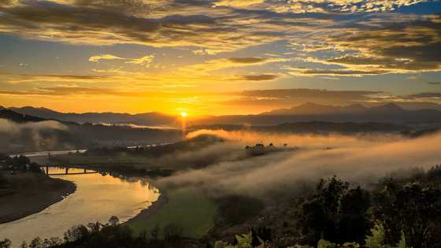
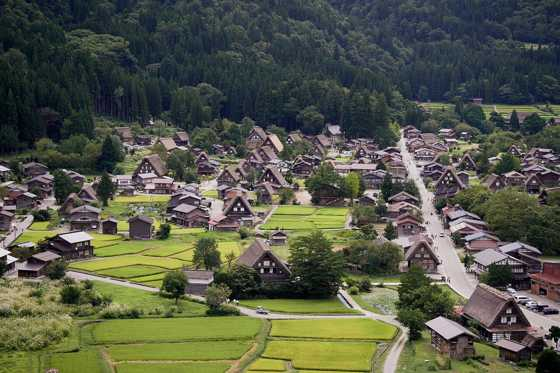
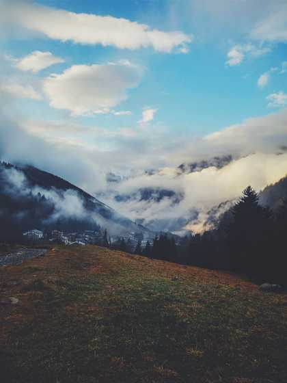
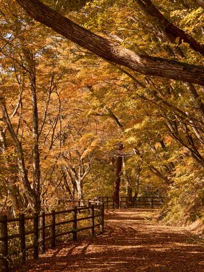
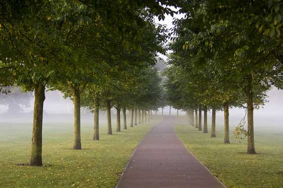
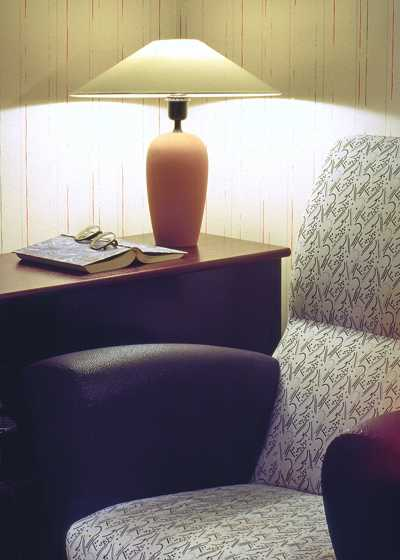
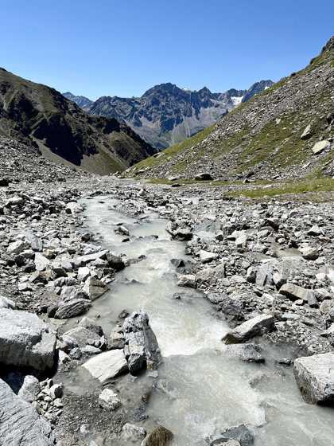
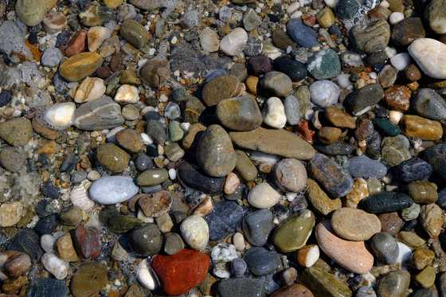

愛知県新城市黄柳野の古民家カフェ
山あいの古民家で、
ゆっくり、ひと息。
古い家の静けさの中で、飲みものを前に少し足をとめる。そんな時間を過ごせるカフェです。
ABOUT
お店について
「古民家カフェさざれ」は、愛知県新城市黄柳野(つげの)にある古民家カフェです。公式Instagram(@sazare721)で日々の様子が発信されています。
店主の方の想いや店名の由来については、確認できた情報がありません。ここでは決めつけず、ご来店やInstagramでお確かめください。
※「山あいの古民家で、ゆっくり、ひと息。」というコンセプトは、古民家カフェという業態と所在地をもとにした制作側のイメージです。


- 業態
- 古民家カフェ
- 営業時間
- 9:00〜17:00ごろ(店主の都合で変わることがあります。Instagramでご確認ください)
- 定休日
- 月曜・火曜(NAVITIME掲載情報。変更の可能性あり)
- お支払い
- 現金のみ(Instagram掲載情報)
- 電話
- 準備中
- 駐車場・席数
- 準備中
VOICE
口コミ(イメージ例)
以下は実際のお客様の声ではなく、制作側が作成したイメージ例です。
イメージ例
山道を進んだ先に、静かな古民家がありました。ゆっくり深呼吸できる時間でした。
イメージ例
朝のうちに立ち寄って、温かい飲みものでひと息。のんびり過ごせそうな雰囲気です。
イメージ例
ドライブの途中に寄り道。窓の外の緑を眺めて、時間を忘れそうなお店です。
実際のご感想はInstagramなどでご覧ください。
GALLERY
山あいのイメージ
奥三河の山あいを思わせる、フリー素材のイメージ写真です。






PHOTO CREDITS
写真クレジット
掲載写真はすべてフリー素材(Wikimedia Commons)のイメージで、店舗の実際の様子ではありません。
- mist-01.jpg:「The morning sun and the morning mist (Ojiya City) Niigata」 Koichi Hayakawa / CC BY-SA 2.0 / 出典(Wikimedia Commons)(縮小・切り抜き加工あり)
- mist-02.jpg:「Foggy mountain village (Unsplash)」 Christian Bruno (ciciancam) / CC0 1.0 / 出典(Wikimedia Commons)(縮小・切り抜き加工あり)
- village-01.jpg:「Shirakawa-go - Shirakawa161」 lumoplank / CC0 1.0 / 出典(Wikimedia Commons)(縮小・切り抜き加工あり)
- terraces-01.jpg:「Rice terraces by ASAKAWA KOHJI」 ASAKAWA KOHJI / CC0 1.0 / 出典(Wikimedia Commons)(縮小・切り抜き加工あり)
- cup-01.jpg:「Hot coffee on a cold day (Unsplash)」 PICSELI (picseli) / CC0 1.0 / 出典(Wikimedia Commons)(縮小・切り抜き加工あり)
- drip-01.jpg:「Manual drip (pour-over) coffee」 Kim Sanso / CC0 1.0 / 出典(Wikimedia Commons)(縮小・切り抜き加工あり)
- drip-02.jpg:「Slow drip coffee」 Alanthebox / CC0 1.0 / 出典(Wikimedia Commons)(縮小・切り抜き加工あり)
- sweets-01.jpg:「Oatmeal cookies on a plate」 Evan Prodromou / CC0 1.0 / 出典(Wikimedia Commons)(縮小・切り抜き加工あり)
- autumn-path-01.jpg:「Naruko Gorge - Naruko6275」 lumoplank / CC0 1.0 / 出典(Wikimedia Commons)(縮小・切り抜き加工あり)
- path-01.jpg:「Trees in the autumn mist- Pontcanna Fields, Cardiff」 Jeremy Segrott / CC BY 2.0 / 出典(Wikimedia Commons)(縮小・切り抜き加工あり)
- room-01.jpg:「Reading corner with armchair and lamp」 Kotivalo / CC BY-SA 3.0 / 出典(Wikimedia Commons)(縮小・切り抜き加工あり)
- stream-02.jpg:「Mountain stream in Geigenkamm」 Tiia Monto / CC BY 4.0 / 出典(Wikimedia Commons)(縮小・切り抜き加工あり)
- pebbles-01.jpg:「Pebbles in Rethymno's beach」 Quim Gil / CC0 1.0 / 出典(Wikimedia Commons)(縮小・切り抜き加工あり)